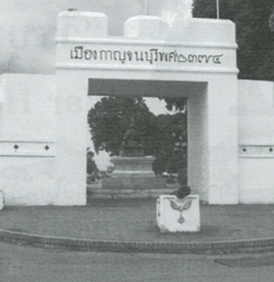
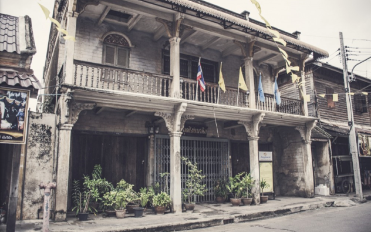
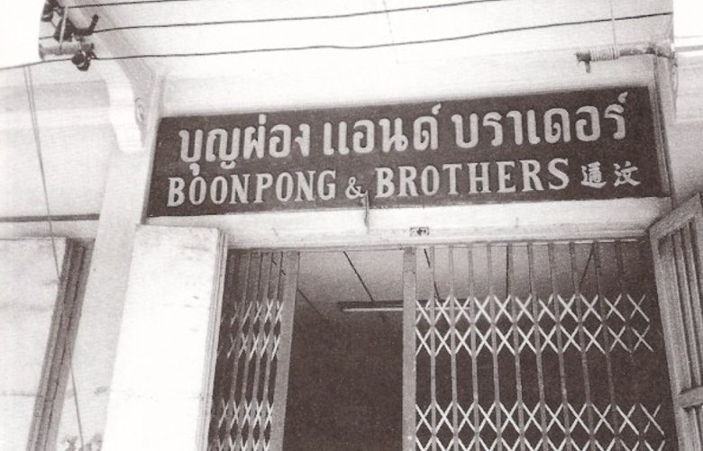
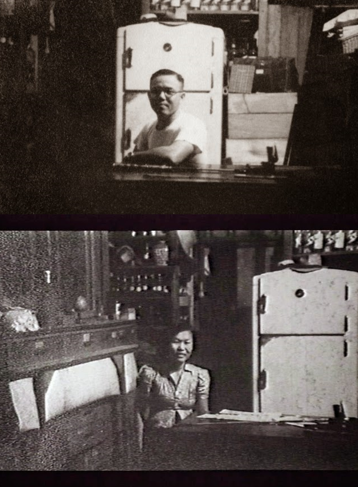
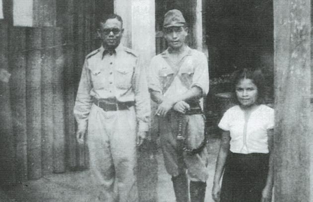
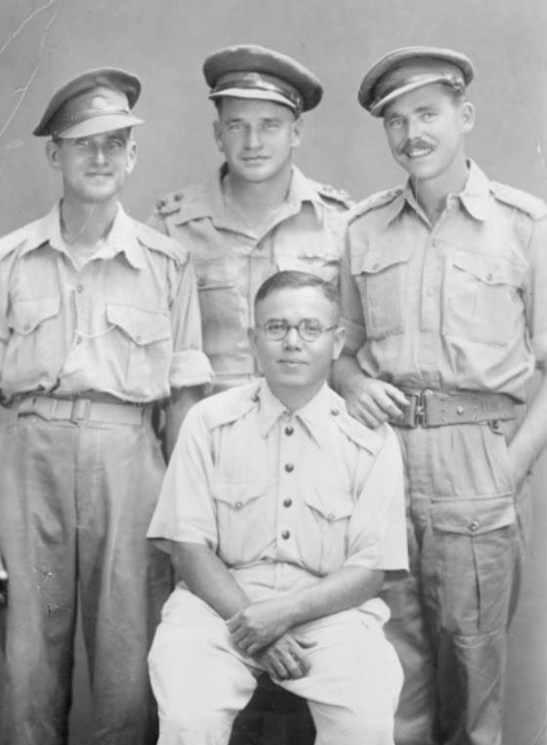
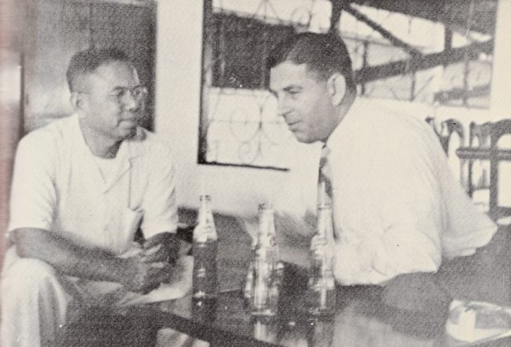
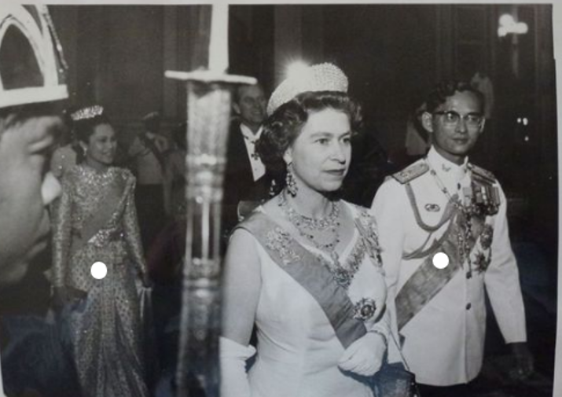
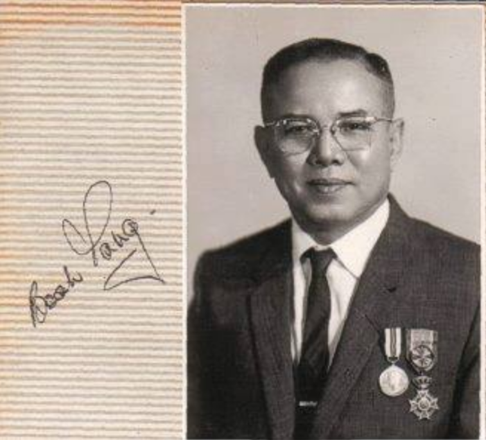
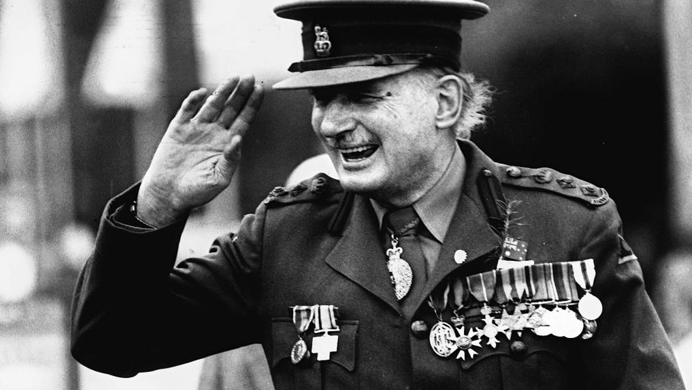

กาญจนบุรีเป็นเมืองชายแดนเล็กๆ
ที่มีลักษณะเป็นเมืองปิดในเขตเทศบาลมีประชากรเพียง 2,800 คน
ถนนปากแพรกเป็นถนนคอนกรีต สายแรกของเมืองกาญจนบุรี อาคารบ้านเรือน ที่พักอาศัยก่อสร้างด้วยภูมิปัญญาของคนรุ่นก่อน
โดยยังคงสภาพเดิมไว้ค่อนข้างมาก มีสถาปัตยกรรมที่เป็นเอกลักษณ์ในรูปแบบตะวันออกผสม ตะวันตก ที่สร้างขึ้นในยุครัชกาลที่ 4 เป็นต้นมา

บ้านบุญผ่อง แอนด์ บราเดอร์
เป็นตึกแถว 3 ชั้น 3 คูหา แห่งเดียวของชุมชนปากแพรกยุคนั้น ลักษณะอาคารชั้นบนมีระเบียง ทั้ง 2 ชั้นกันสาดประดับด้วยกระจกสี ประตูหน้าต่างแบบลูกฟัก มีช่องแสงเป็นกระจกสี ส่วนบนสุดเป็นชั้น ดาดฟ้า

นายบุญผ่อง สิริวิเวชชะพันธ์ เกิดเมื่อวันที่ 21 เมษายน พ.ศ.2449
มีพี่น้องร่วมกัน 7 คน โดยที่คุณบุญผ่องเป็นบุตรคนโต ช่วงเวลาก่อนเกิดสงครามนั้น คุณบุญผ่องได้เข้ารับราชการที่กรมการรถไฟเป็นเวลา 8 ปี
ก่อนที่จะลาออกมาทำธุรกิจค้าขายส่วนตัวกับครอบครัวที่บ้านเกิดจ.กาญจนบุรี ในชื่อ "Boonpong and brothers" หลังจากนั้นคุณบุญผ่องได้ลงสมัครและดำรงตำแหน่งเป็นนายกเทศมนตรีเมืองกาญจนบุรี ในปีพ.ศ.2483 - 2485
ซึ่งสงครามมหาเอเชียบูรพาพึ่งจะมาปะทุเอาในช่วงท้ายที่คุณบุญผ่องดำรงตำแหน่งอยู่พอดี

ในช่วงสงครามมหาเอเชียบูรพา กองทัพบกจักรวรรดิญี่ปุ่นมีแผนที่จะต้องการบุก British Burma โดยวางแผนที่จะสร้างทางรถไฟในการขนส่งกำลังเข้าสู่พม่า ผ่านจังหวัดกาญจนบุรี
จึงมีการเกณฑ์เชลยศึกและกรรมกรเข้ามาใช้แรงงานในการสร้างทางรถไฟ ในช่วงที่มีการสร้างทางรถไฟนั้นร้านของคุณบุญผ่องได้กลายเป็นร้านที่ทหารญี่ปุ่นใช้เป็นนายหน้าในการจัดหาเสบียง โดยที่ทหารผู้ควบคุมงานก่อสร้างจะนำเชลยมารับของที่ร้านขนกลับค่าย หรือบางครั้งคุณบุญผ่องก็จะนำของที่สั่งไปส่งถึงค่ายที่ทำงานก่อสร้างถึงที่

ด้วยความที่คุณบุญผ่องสามารถพูดภาษาอังกฤษได้ จึงมีการพูดคุยกับเชลยที่มาขนสินค้าที่สั่งไว้ ถามถึงความเป็นอยู่ต่างๆ
จนคุณบุญผ่องรับรู้ถึงความทุกข์และความลำบากที่เชลยศึกต้องพบเจอในการสร้างทางรถไฟ จึงมีการแอบช่วยเหลือเหล่าเชลยอย่างลับๆ
ทั้งให้เชลยศึกยืมเงินแอบนำอุปกรณ์ต่อไปให้ตอนนำของไปให้ที่ค่าย เช่น ยารักษาโรค ส่วนประกอบวิทยุ ฯลฯ ในช่วงหลังๆทหารญี่ปุ่นที่ควบคุมค่ายเริ่มจับผิดสังเกต
คุณบุญผ่องจึงต้องให้ลูกสาวคือ ด.ญ.ผณี สิริเวชชะพันธ์ เป็นคนช่วยลักลอบขนของใช้ให้เชลยศึกแทน

จากวีรกรรมการช่วยเหลือของคุณบุญผ่อง ทำให้เหล่าเชลยศึกต่างสรรเสริญในสิ่งที่คุณบุญผ่องได้ทำเอาไว้ จนกลายเป็นมิตรภาพที่ดีต่อกัน ครั้งหนึ่งเมื่อคุณบุญผ่องไปประกอบธุรกิจในกรุงเทพฯ
เหล่าอดีตเชลยศึกก็ได้มอบรถซึ่งยึดมาจากกองทหารจักรวรรดิญี่ปุ่นจำนวน 200 คันเป็นของขวัญ จนกลายเป็นธุรกิจรถเมย์ของคุณบุญผ่องในเวลาต่อมา
ข่าวการช่วยเหลือเชลยศึกในช่วงสงครามเริ่มเป็นที่รู้จักในต่างประเทศ โดยเฉพาะออสเตรเลีย มีการลงข่าวหนังสือพิมพ์สรรเสริญ และมีการตั้งฉายาให้กับคุณบุญผ่องว่า "The Quiet Lions"
 เชลยหลายคนกลับมาเยี่ยมเขาพร้อมครอบครัว
 ในปีพ.ศ.2515 คุณบุญผ่องและภรรยา ได้รับเชิญให้เข้าเฝ้าและร่วมโต๊ะเสวยพระกระยาหาร กับสมเด็จพระราชินีนาถเอลิซาเบธที่ 2 แห่งสหราชอาณาจักรในช่วงการเสด็จเยือนประเทศไทยปีพ.ศ.2515

นอกจากนี้คุณบุญผ่องยังได้รับพระราชทานเครื่องราชอิสริยภรณ์

พันโทบุญผ่อง สิริเวชชะพันธ์ เสียชีวิตเมื่อวันที่ 29 มกราคม พ.ศ.2525 หลังจากนั้น4ปีต่อมา Sir Edward Dunlop อดีตเชลยศึกที่สนิทสนมกับคุณบุญผ่อง ได้ก่อตั้งทุน The Weary Dulop-Boonpong Exchage Fellowship
เพื่อสนับสนุนทุนให้ศัลยแพทย์ไทย ได้มีโอกาสไปฝึกอบรมเทคนิคทางศัลยกรรมที่ออสเตรเลียและนิวซีแลนด์ และเพื่อรำลึกถึงบุญผ่องและชาวไทยที่ช่วยเหลือเชลยศึกในสงคราม